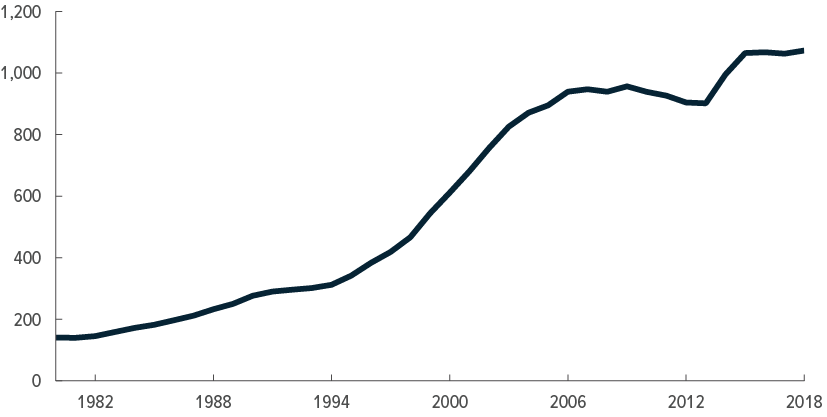
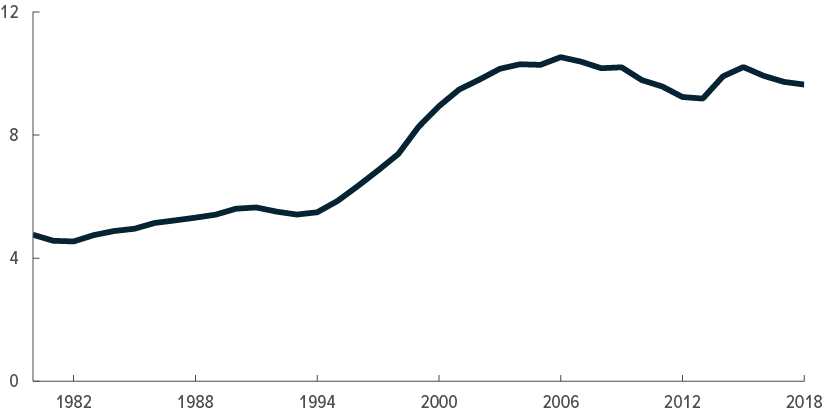
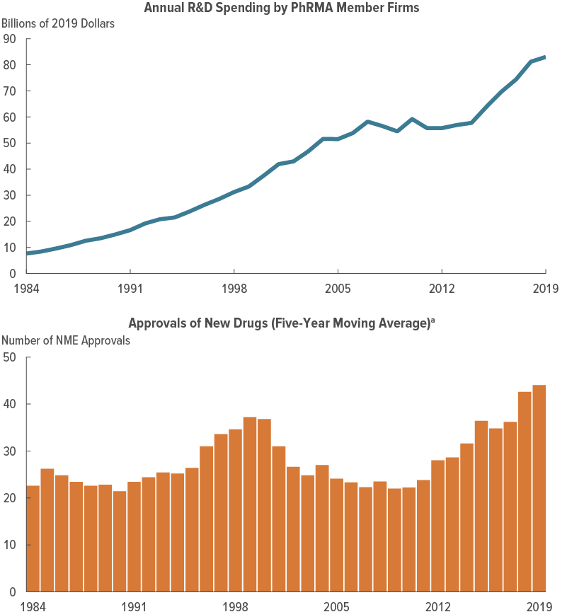
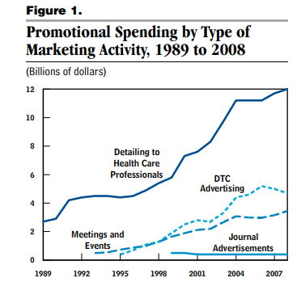

18 Introduction to Prescription Drugs
18.1 Pharmaceutical Spending
The pharmaceutical industry in the United States is a complex and multifaceted component of the nation’s healthcare landscape. While it is often heralded for its role in medical innovation and the development of life-saving drugs, its economic footprint is paradoxical. On the one hand, per capita spending on pharmaceuticals is high and has been on an upward trajectory, highlighting its significance in individual healthcare consumption, as reflected in Figure 18.1 (a) (Source: CBO Report on Pharma Spending). On the other hand, when viewed in the context of overall healthcare expenditures, the pharmaceutical sector accounts for a relatively smaller share, as shown in Figure 18.1 (b) (Source: CBO Report on Pharma Spending). This dichotomy underlines the industry’s intricate role in the U.S. healthcare system. It is a sector that commands significant individual spending and is a focus of policy debates, particularly around drug pricing, yet it does not dominate the healthcare budget to the extent that other areas, like hospital care, do. This nuanced position adds layers of complexity to policy discussions and healthcare management strategies involving the pharmaceutical industry.


18.2 Prescription Drug Life Cycle
The life cycle of a prescription drug in the United States is a multifaceted journey that encompasses several critical phases, each contributing to the drug’s development, approval, and eventual distribution. The process commences with the Research and Development (R&D) phase, a rigorous and time-consuming stage that lays the scientific groundwork for the drug. Following successful R&D, the drug undergoes a stringent approval process led by the Food and Drug Administration (FDA), which ensures its safety and efficacy. Once approved, the drug enters the marketing phase, where strategic efforts are deployed to promote it to both healthcare professionals and consumers. The final phase involves the sales and distribution of the drug, which can include various channels such as wholesalers, pharmacies, and direct-to-consumer platforms. Each of these phases is integral to the drug’s life cycle and collectively shapes its role and presence in the healthcare market. The following sections provide a brief overview of each phase, highlighting its significance and impact on the drug’s life cycle.
18.2.1 Research and Development
The Research and Development (R&D) phase serves as the cornerstone for the development of a new prescription drug, marking the beginning of a lengthy and intricate journey from concept to market. The R&D phase is both time-consuming and resource-intensive, often taking between 10 to 15 years to complete. This phase is divided into several key stages, starting with the discovery of a new compound or biological target. Initial research often involves a host of activities such as screening, target identification, and pre-clinical testing. Less than 5% of candidate compounds make it to pre-clinical testing. But still, these early efforts are pivotal in determining the drug’s potential effectiveness and safety profile.
After initial discovery, the focus shifts to clinical trials, which are designed to rigorously test the drug’s safety and efficacy in human subjects. These trials are subdivided into phases, each with specific objectives and regulatory benchmarks, and can take up to 10 years in total. Only about 20% of drugs in pre-clinical discovery make it to clinical trials. Phase I trials are the first step and involve testing the drug on a small group of healthy volunteers. The primary focus here is on safety and identifying any potential side effects. Once safety is established, the drug moves to Phase II trials, which are conducted on a larger group of participants who have the condition the drug aims to treat. This stage assesses not only safety but also the drug’s efficacy and optimal dosages. Phase III trials expand the scope considerably, involving a much larger and diverse participant pool. These trials are usually randomized and double-blinded, setting the industry standard for evidence on effectiveness and additional safety data.
Upon successful completion of Phase III trials, the data is compiled into a New Drug Application (NDA) and submitted to the FDA for approval. If approved, some drugs may also undergo Phase IV trials, also known as post-marketing surveillance trials. These are designed to monitor the drug’s performance and safety in the general population over an extended period and may result in a drug being withdrawn from the market or restrictions on its use being imposed. Each of these sub-phases is integral to ensuring that a new drug is both effective and safe for its intended patient population.
18.2.2 FDA Approval
FDA approval is a pivotal milestone in the life cycle of a prescription drug, serving as a regulatory endorsement of the drug’s safety and efficacy for its indicated use. The approval is granted after a thorough review of the data collected through clinical trials, which are submitted as part of the NDA. The FDA evaluates not only the clinical trial results but also the drug’s labeling, manufacturing quality, and proposed marketing strategies. An FDA approval gives the green light for the drug to be marketed and sold to consumers for the specified indications, making it a critical factor for a drug’s commercial success.
However, it’s important to note that FDA approval is often nuanced. The approval may be restricted to specific doses, patient populations, or conditions, and may require additional post-marketing studies or risk management strategies. Moreover, physicians have the discretion to prescribe drugs for “off-label” uses that are not explicitly approved by the FDA, although the drugs themselves cannot be marketed for those uses. FDA approval is also crucial for insurance coverage, as many insurance companies require FDA approval as a prerequisite for including a drug in their covered medications list. Thus, FDA approval is not just a regulatory hurdle but a multi-faceted endorsement that impacts various aspects of a drug’s life cycle, from marketing and sales to insurance coverage and clinical practice. Often, companies continue to conduct clinical trials even after initial approval to expand the drug’s approved uses.
R&D spending alongside new drug approvals are summarized in Figure 18.2 (Source: CBO Report on R&D Spending).

18.2.3 Marketing
The landscape of marketing expenditures in the pharmaceutical industry has evolved over time, reflecting shifting strategies and priorities. Based on 2018 data, about $6 billion per year is allocated for direct-to-consumer advertising, with television and magazines being the primary mediums. However, this figure pales in comparison to the money spent on detailing, which involves sales representatives visiting physicians. Detailing expenditures are nearly three times higher than that of direct-to-consumer advertising, according to 2008 data. Even more strikingly, the industry spent over $20 billion per year on free samples as of 2005 (Source: GAO Report on DTC Pharma Advertising). These evolving trends highlight the changing role of marketing in the pharmaceutical industry, emphasizing a gradual shift from traditional advertising platforms to more targeted strategies involving healthcare professionals.

18.2.4 Sales
In the pharmaceutical industry, the supply chain is relatively straightforward. Manufacturers, such as pharmaceutical companies, are the initial point of contact. They primarily sell to wholesalers, which account for 60-70% of sales. Notable wholesalers in this sector include McKesson, Cardinal Health, and AmerisourceBergen. In some instances, manufacturers sell directly to pharmacies, particularly large chains. From the wholesalers, drugs are sold to various types of pharmacies, both retail and non-retail, including hospitals, nursing homes, and home healthcare providers. Finally, these pharmacies sell the drugs to the end consumers, the patients.
The flow of money in this industry is more complicated. Manufacturers are responsible for setting the list prices of drugs. Wholesalers negotiate discounts and rebates and sell the drugs to pharmacies at a markup. Pharmacy Benefit Managers (PBMs) administer drug formularies and negotiate further discounts and rebates with both manufacturers and insurers. Pharmacies then sell these drugs to patients, also at a markup.
Determining the actual price of a drug is a complex task. Insurers pay PBMs to manage drug benefits. Additionally, manufacturers offer rebates to both insurers and PBMs. In the case of Medicaid, mandatory rebates exceed 20% of the wholesale price. For brand-name drugs, the size of the rebates is significant but opaque, making it difficult to ascertain the actual price.
Several factors influence drug pricing. Manufacturer market power plays a crucial role; patent protection can provide up to 20 years of monopoly power, although effective monopoly power is usually closer to 10 years due to the time required for R&D and approval. Other factors affecting price include regulation and price controls, as well as the agency of physicians in prescribing drugs.